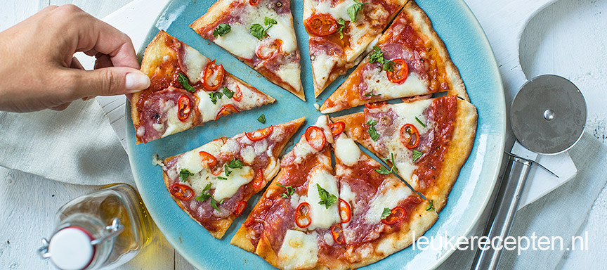

Durf jij deze pittige pizza met salami en rode pepers aan? Met bereiding in de oven of op de BBQ
Maak het deeg wegens het recept of de verpakking. Bestuif een werkvlak met wat bloem en rol 2 pizzabodems hierop uit. Besmeer met wat pizzasaus en beleg met de salami. Hak de rode pepers fijn en verdeel deze over de pizza (naar smaak). Snijd de mozzarella in stukjes en verdeel ook over de pizza. Druppel er nog wat chili olie over voor een extra pittige smaak, tabasco kan eventueel ook als je het heel spicy wil maken. Besrijk ook de randjes met een beetje olie.
Bak de pizza ca 15 min in de oven op 230 graden. Manier op de BBQ: om de pizza op de BBQ te bakken heb je een barbecue nodig die je met een deksel goed kunt afsluiten. En gebruik een pizzasteen op de BBQ en leg deze al 20 min van te voren op de BBQ zodat deze goed warm kan worden. Een pizzaschep is ook handig. Bereid de pizza zoals hierboven staat beschreven. Houd een temperatuur van ca 250 graden van de barbecue aan. Bestrooi de pizzasteen met een beetje bloem. Leg de pizza hierop en doe de deksel van de barbecue dicht. Na ongeveer 8 min is hij klaar, afhankelijk van de temperatuur van de barbecue. Check regelmatig of de bodem niet zwart wordt.